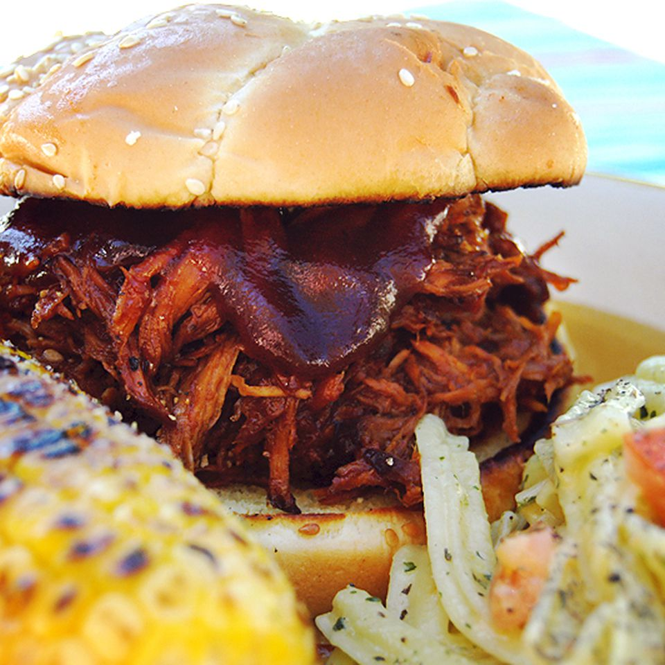

Slow Cooked Pulled Pork

- Oil
- Pork
- Sauces
- Apple cider Vinegar
- Broth
- Brown Sugar
- Seasonings
- Onion
- Buns and butter
Steps
- Pour oil into the slow cooker, then place the roast on top of the oil.
- Add the remaining ingredients to the Crock-Pot.
- Cover and cook until the pork shreds easily.
- Shred the pork and return it to the slow cooker to combine it with the juices.
- If you’re making sandwiches, serve the pulled pork on buttered buns. /li>
git not working